Go to "The Final Fantasy VII Franchise Quick Overview"
Go to "The Final Fantasy VII Franchise Quick Overview"
There are lots of characters introduced throughout the Final Fantasy VII series, but there are certain characters that stand out. Here are the most relevant characters in the series:
Now that it is listed, I will separate the characters into three sections since it is shown that way in the game.
Before moving on, just be warned there are potential spoilers. Good luck.
The most important party of the game is Cloud's party. The people in his party are Tifa, Barret, Aerith, Red XIII, Yuffie, (SPOILER) Cait Sith/Reeve Tuesti, and partially Zack, which I will explain later on.
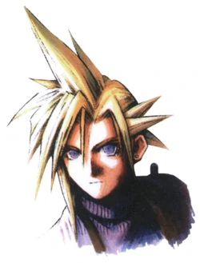Cloud Strife is the main protagonist of FF7. The ex-SOLDIER (SOLDIER is an army under Shinra Electric Power Company) joins an eco-terrorist group to save the planet from Shinra and Sephiroth. Also, Cloud has a special past, and (SPOILER) Sephiroth torments Cloud with it. With tormenting Cloud, Sephiroth nearly destroyed the planet. Fortunately, Cloud and the rest of the party save the planet with an exception that I will not mention. Also, Cloud defeats Sephiroth, which should not be a spoiler since the hero always wins.
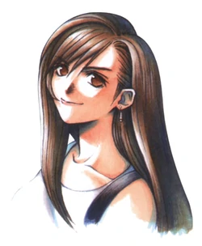Tifa Lockhart is Cloud's childhood friend and one of his romantic interests. Also, she is in the eco-terrorist group. Without giving spoilers, Tifa knows Cloud's past better than him, but Cloud does not know that. Tifa makes sure to be by his side at all times, especially after the events that occurred in their hometown.
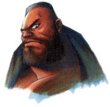Barret Wallace is the leader of the eco-terrorist group named Avalanche. Barret is known to love the planet due to a former mentor, and he is willing to do anything to save it, even if it means putting other people's life at risk. Besides his love for the planet, he is known to love his daughter Marlene, but there is more to their story.
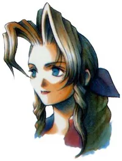Aerith Gainsborough is the first reason why the planet was not destroyed. This is due to her being an Ancient, a special human race. There is more about Ancients in the game, so no spoilers here. A part from this, Aerith has always been a sweet angel with the rest of the party. (SPOILER) Unfortunately, Sephiroth is the reason why fans still cry when hearing Aerith's theme song.
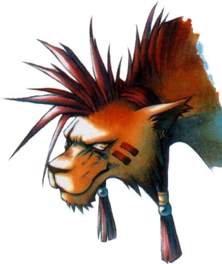Red XIII is a creature who has powers and can understand the planet. Red XIII tags along with the crew at Shinra. (SPOILER) He had been experimented on by Professor Hojo, but escaped when Cloud, Tifa and Barret appeared at Shinra's headquarter for a reason. Since then, Red XIII became a crucial member of the party. Also, as the game progresses, the fans and Cloud's party learns more about Red XIII's past.
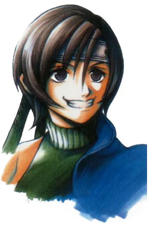Yuffie Kisaragi is a missable character since you would have to explore the world in order to let her join the party. With watching gameplays on YouTube, she will tag along for most of the game. Fortunately, in Final Fantasy VII Remake, the developers included a short story based on Yuffie's perspective that reassures the fans that Cloud's part will definitely meet her at one point. Moving on, Yuffie is a mischievous young girl from an important nation. She is on a mission to finish Shinra. If you watch a gameplay or manage to add her to the party, Yuffie will be a great help.
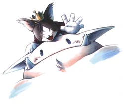Cait Sith is (SPOILER) a robot spy from Shinra. Also, Cait Sith can be a missable character, but not as bad as missing Yuffie. Fortunately, Square Enix included Cait Sith in a cutscene from Remake. There is a high chance Cloud's party might meet him in Final Fantasy VII Rebirth, but there is still time to see the meeting happening. Moving on, (SPOILER) the person controlling Cait Sith is the head of urban development Reeve Tuesti. He makes sure to keep an eye on Cloud's party since he wants to help them defeat Shinra. Tuesti believes Shinra is in the wrong, but cannot go against them since Tuesti speaks for the people. Tuesti created Cait Sith who tells fortunes and tags along with the party. Besides being a spy, Cait Sith is a good member. Just be aware, there is a certain fortune he says that you will need to pick up on when playing FF7.

Vincent Valentine is one of the most important characters in the FF7 series, and he is the main protagonist of Dirge of Cerberus: Final Fantasy VII. Vincent's part is crucial just as Cloud's and Aerith's since he understands Shinra from working for there. Also, he has close connections to Professor Hojo and Sephiroth. Unfortunately, Vincent is another missable character unless you watch a gameplay. He is missable since he has a background story that leaves him in an awful situation. Fortunately, with seeing Yuffie's and Cait Sith's situation in Remake, Cloud's party will have to meet Vincent, but we will see with the future games Square Enix is working on for FF7.
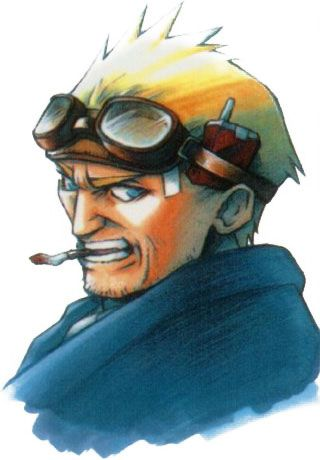The last member to join the party is Cid Highwind. Cid loves the skies and knows how to fly aircrafts. One of his biggest dreams is to go to space. It was about to become a reality for Cid until Shinra got involved. With plans to still go to space, Cid joins the party to help them beat Shinra. There is more about Cid, but that will be spoiling his whole story.
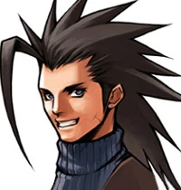The unofficial member of the party is Zack Fair. He is another important character of the FF7 series since he is one of the reasons why FF7 exists. Also, Zack is the main protagonist of Crisis Core: Final Fantasy VII. There is another huge detail of Zack that is mentioned in FF7 and in CC, and it helps fans understand his character more. All I have to say is just play the games, and you will understand Zack and his story.
Sephiroth's party is not really a group, but they all have conections with each other and have the same goal in mind. The members are Sephiroth, Professor Hojo and Jenova. (SPOILER) The goal is to find the promised land and to destroy the planet. There are reasons for this, but you should play the game before I ruin the fun.
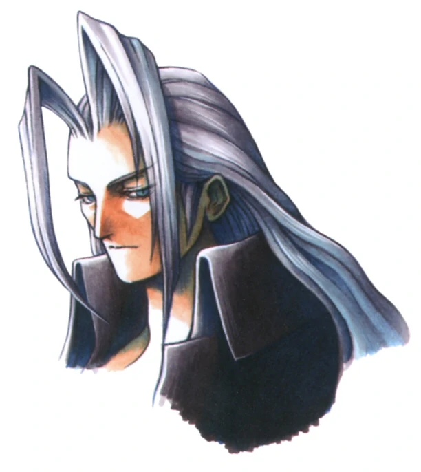Sephiroth is the main villain and the last boss of FF7. Thanks to him, most of the members in Cloud's party were traumatized by Sephiroth since he is a menace to the world. Even though saying this, he is partially misunderstood. That is due to Professor Hojo and his evilness. Without spoiling you, Sephiroth was once recognized as a war hero since he worked under Shinra's SOLDIER. That all changed one day when he visited a certain town where Cloud got involved. After attempting to the destroy the planet for his benefit, Cloud finishes Sephiroth. Unfortunately, something changed in the Remake, but there is an explanation as to why the change happened.
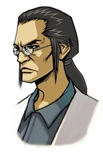Professor Hojo lives up to his crazy, scientist image, and this is bad news. I mean, Hojo is good at playing his part, but is bad news for Cloud's party and for Sephiroth. Hojo just does whatever he wants under Shinra's roof. Most of the things he has done is just pure evil. Hojo believes that he can find the promised land with the things he has done. Do not be like Hojo.
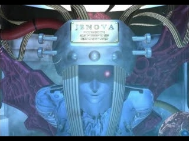Jenova is an important factor as to why both Hojo and Sephiroth ended up being the way they are. Hojo mistakened Jenova for an Ancient and decided to do some experimentations. Since he thought Jenova was a Ancient, Hojo thought he could find the promised land. Things started going wrong, and discoveries were made revealing what Jenova actually is.
The Turks is an organization that work under Shinra. They are like an intelligence unit that makes sure to investigate anything suspicious, terminate people, and to clean up any mess left from Shinra. Also, they are good at keeping secrets. The members that belong in the Turks are Rufus, Tseng, Rude, Reno, and Elena.
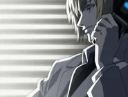Rufus Shinra is the son of President Shinra, but later Rufus becomes the president of the company. This makes him in charge of everything, including SOLDIERs and the Turks. Rufus puts his trust in the Turks, especially in Tseng. Sometimes, you like Rufus and sometimes you don't. Rufus is a pretty good character, especially as the story advances.
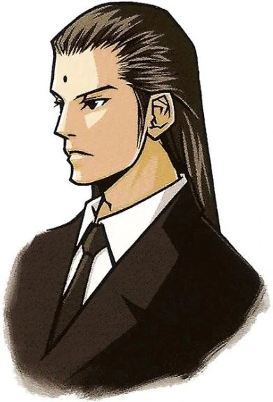Tseng is the trusty right-hand man of Rufus and is the leader of the Turks. Tseng is known for his cold demeanor in FF7, and this somewhat changes in the Remake. Even with his cold demeanor, Tseng cares about his members, which you can tell in the other games.
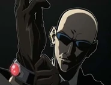Rude is the quietest member of the Turks, but gets the job done. He has little screen time in FF7, but he still manages to capture the fans' hearts, (SPOILER) except for Tifa's. Somehow, Rude has a crush on Tifa, but this is a missable detail in the original game. Fortunately, the little crush is shown in the Remake. There is more to Rude in the other games and movie.
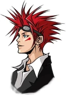Reno, just like Yuffie, is the mischievous member of the Turks and his signature move is sticking his tongue out. He is very playful, but when it comes to finishing business, Reno pulls through till the end. Reno and Rude are always paired up on missions, and the dynamic is funny to watch.
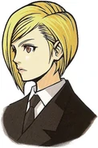In FF7, Elena was introduced as the only women in the Turks. Her role is a bit minor compared to the other members, but her personality adds to the Turks and what they stand for. Hopefully, with the remastering of FF7, Square Enix will give her a better development, just like how they did with the other members of the Turks.
There is much more to each of the characters mentioned on the website. Also, since I mainly described them from FF7, there are details I missed from the other games and the movie. If I were to mention all of the details, this would be a long website and there would be a lot of spoilers. I will make sure to add a link in the next section so you can search up the characters and look for more details.
I did not list the other characters in the series since they are either minor characters, but you can find them through here. Also, you can use that same link to learn more about the characters mentioned on this website.
Have fun!